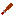

In Minetest, common tools include shovels, axes and pickaxes.
You can create as many new tools as you like - you might create a pickaxe which is better than a diamond pickaxe, or you might create a shovel which is worse than a wooden shovel. The choice is yours!
Once again, we start with a texture. Either create your own or use this one, which is supposed to resemble some kind of wooden club.

The club is created with another new function. You can probably guess its name.
minetest.register_tool(NAME, TABLE)
As usual, we start by adding the tool's name and splitting the code across several lines.
minetest.register_tool("hello:wooden_club", {
STUFF
GOES
HERE
})
Just like a craftitem, a tool has a description and an inventory_image.
minetest.register_tool("hello:wooden_club", {
description = "Wooden Club",
inventory_image = "wooden_club.png",
})
You should copy and paste this line, as well. It plays a sound effect when a worn-out tool finally breaks.
sound = { breaks = "default_tool_breaks" },
Now, cast your mind back to the chapter in which we created the happy block. You might remember that we added the block to the cracky group, because we wanted it to behave like stone. Specifically, we wanted to force the player to use a pickaxe to dig it.
groups = { cracky = 3 },
We might instead have added it to the choppy group or the crumbly group, for which the player would have needed an axe or a shovel.
We can now put these groups to use, by specifying that our new tool can be used to "dig" blocks in the cracky group, or blocks in the choppy group, or blocks in the crumbly group.
For simplicity, let's decide that our wooden club is some weird kind of pickaxe, such that it can dig items in the cracky group. (Our happy block is in the cracky group, so we can use it to dig that.)
We need to add the following line to our function.
tool_capabilities = TABLE,
The table contains four sets of numbers. Every time you create a new tool, you can just copy and paste this code block, and then adjust the numbers to suit your requirements.
tool_capabilities = {
full_punch_interval = 0.9,
max_drop_level = 3,
groupcaps = {
cracky = { times = { [1] = 2.0, [2] = 1.0, [3] = 0.50 }, uses = 30, maxlevel = 3 },
},
damage_groups = { fleshy = 5 },
},
Normally you'll adjust only one or two values, leaving the rest alone, for example:
uses = 30
This number specifies how many times the tool can be used, before wearing out. It doesn't correspond exactly to 30 stone blocks, but doubling the number does double the number of blocks you can dig.
The happy block is in the cracky group:
groups = { cracky = 3 },
You might remember that the 3 represents a soft node that is easy to dig, and that a 2 represents a harder node, whereas a 1 would represent a very hard node.
Let's compare that with a part of the tool code:
cracky = { times = { [1] = 2.0, [2] = 1.0, [3] = 0.50 }, uses = 30, maxlevel = 3 },
This line starts with cracky, so all of these numbers apply when digging a block in the cracky group.
Now let's focus on a part of that line:
[1] = 2.0, [2] = 1.0, [3] = 0.50
Roughly, this means that digging a cracky = 1 node takes two seconds, digging a cracky = 2 node takes one second, and digging a cracky = 3 node takes half a second. You can adjust those numbers to suit your needs.
We could amend that code so that the tool can't dig very hard nodes, just by missing out the first part.
[2] = 1.0, [3] = 0.50
So the whole line would look like this:
cracky = { times = { [2] = 1.0, [3] = 0.50 }, uses = 30, maxlevel = 3 },
We could amend it further, so that the tool can only dig soft nodes.
[3] = 0.50
So the whole line would look like this:
cracky = { times = { [3] = 0.50 }, uses = 30, maxlevel = 3 },
You might want a tool that can act like a pickaxe, an axe or a shovel.
tool_capabilities = {
full_punch_interval = 0.9,
max_drop_level = 3,
groupcaps = {
cracky = { times = { [1] = 2.0, [2] = 1.0, [3] = 0.50 }, uses = 30, maxlevel = 3 },
choppy = { times = { [1] = 2.10, [2] = 0.90, [3] = 0.50 }, uses = 30, maxlevel = 3 },
crumbly = { times = { [1] = 1.10, [2] = 0.50, [3] = 0.30 }, uses = 30, maxlevel = 3 },
},
damage_groups = { fleshy = 5 },
},
If you don't want the tool to act like a pickaxe, just remove the cracky line. If you don't want it to act like an axe, remove the choppy line. If you don't want it to act like a shovel, remove the crumbly line.